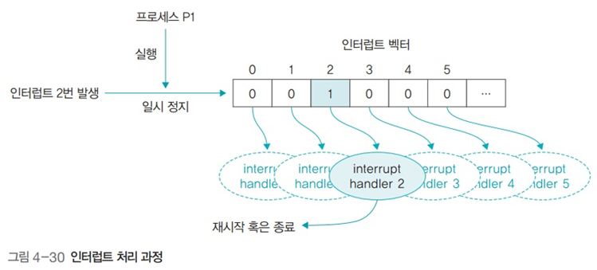

인터럽트와 프로세스 통신
인터럽트와 프로세스 통신
1. 인터럽트 심화
폴링
- 입출력을 요청하면 운영체제가 직접 주기적으로 입출력장치를 확인하여 처리
인터럽트
- 입출력 관리자에게 입출력을 요청하고 입출력이 완료되면 이벤트를 발생시켜 알림
- 동기적 인터럽트
- 프로세스가 실행중인 명령어로 발생
- 다른 사용자의 메모리 영역 접근, 오버플로우, 언더플로우, 수를 0으로 나누는 산술 연산 등
- 비동기적 인터럽트
- 하드딛스크 읽기 오류, 메모리 불량 등 하드웨어적 오류
- 사용자가 직접 작동하는 키보드 인터럽트, 마우스 인터럽트
인터럽트 처리 과정

- 인터럽트가 발생하면 현재 실행중인 프로세스는 일시정지, 재시작하기 위해 상태 정보를 PCB에 임시 저장함
- 인터럽트 컨트롤러가 실행되어 인터럽트 처리 순서 결정
- 먼저 처리할 인터럽트가 결정되면 인터럽트 벡터에 등록된 인터럽트 핸들러 (해당 이벤트를 처리할 함수의 시작 주소) 실행
- 핸들러가 인터럽트 처리를 마치면 일시정지된 프로세스가 다시 실행되거나 종료
커널 모드
- 운영체제와 관련된 커널 프로세스가 실행되는 상태
사용자 모드
- 사용자 프로세스가 실행되는 상태
이중 모드
- 운영체제가 커널 모드와 사용자 모드를 전환하며 일 처리를 하는 것
- 궁극적인 목적은 자원 보호
시스템 호출과 API

- 사용자 프로세스가 자원에 접근하려면 시스템 호출을 이용해야 함
- 사용자 프로세스는 API가 준비해놓은 다양한 함수를 이용해 시스템 자원에 접근
2. 프로세스 통신
종류

- 프로세스 내부 데이터 통신
- 한 프로세스 내에 2개 이상의 스레드가 존재하는 경우의 통신
- 전역 변수, 파일을 이용해 데이터를 주고받음
- 프로세스 간 데이터 통신
- 한 PC에 있는 여러 프로세스끼리 통신
- 공용 파일 또는 운영체제가 제공하는 파이프 이용
- 네트워크를 이용한 데이터 통신
- 여러 컴퓨터가 네트워크로 연결되어 있을 때 통신
- 소켓을 이용
분류

통신 방향에 따른 분류
- 양방향 통신
- 데이터를 동시에 양쪽 방향으로 전송 가능
- 일반적인 통신
- 소켓 통신
- 반양방향 통신
- 양쪽 방향으로 통신 가능하나 동시 전송 불가
- 무전기
- 단방향 통신
- 한쪽 방향으로만 데이터 전송
- 모스 신호
- 전역 변수, 파이프
통신 구현 방식에 따른 분류
- 대기가 있는 통신
- 동기화를 지원하는 통신 방식
- 데이터를 받는 쪽은 데이터가 도착할 때 까지 대기
- 대기가 없는 통신
- 동기화를 지원하지 않는 통신 방식
- 데이터를 받는 쪽은 Busy Waiting을 통해 데이터가 도착했는지 여부를 직접 확인
프로세스 간 통신 방식

- 데이터를 주거나 받는 쓰기 연산과 읽기 연산으로 이루어짐
공유메모리 방식
- 공동으로 관리하는 메모리를 사용해 데이터를 주고받음
- 데이터를 보내는 쪽은 공유메모리에 쓰기, 받는 쪽은 공유메모리 읽기
- 유닉스 공유메모리 관련 함수: shmget(), shmat()
파일을 이용한 통신

- 파일 열기
- open(“com.txt”, O_RDWR) : com.txt 파일을 읽기와 쓰기를 할 수 있는 형태로 준비
- 파일이 열리면 open 함수는 그 파일에 접근할 수 있는 권한인 파일 기술자 fd를 사용자에게 반환
- 읽기 또는 쓰기 연산
- write(., “Test”, 5) : fd, 즉 com.txt 파일에 Test라는 문자열을 쓰라는 뜻
- read(., buf, 5) : fd, 즉 com.txt 파일에서 5B를 읽어 변수 buf에 저장
- 파일 닫기
- close(.) : fd가 가리키는 파일, 즉 com.txt 파일을 닫음
파이프를 이용한 통신

- 파이프로 양방향 통신을 하려면 파이프 2개 사용
- 운영체제가 제공하는 동기화 통신 방식
- 파일 입출력과 같이 open() 함수로 기술자를 얻고 close() 함수로 마무리
- 파이프에 쓰기 연산, 읽기 연산을 통해 송신 수신
이름 없는 파이프
- 일반적인 파이프
이름 있는 파이프
- FIFO라는 특수 파일을 이용해 서로 관련없는 프로세스 간 통신에 사용
소켓을 이용한 통신

- 여러 컴퓨터에 있는 프로세스끼리 통신
- 통신하고자 하는 프로세스는 자신의 소켓과 상대의 소켓을 연결 (바인딩)
- 소켓에 쓰기 연산을 하면 데이터가 전송되고
- 읽기 연산을 하면 데이터를 받게 됨